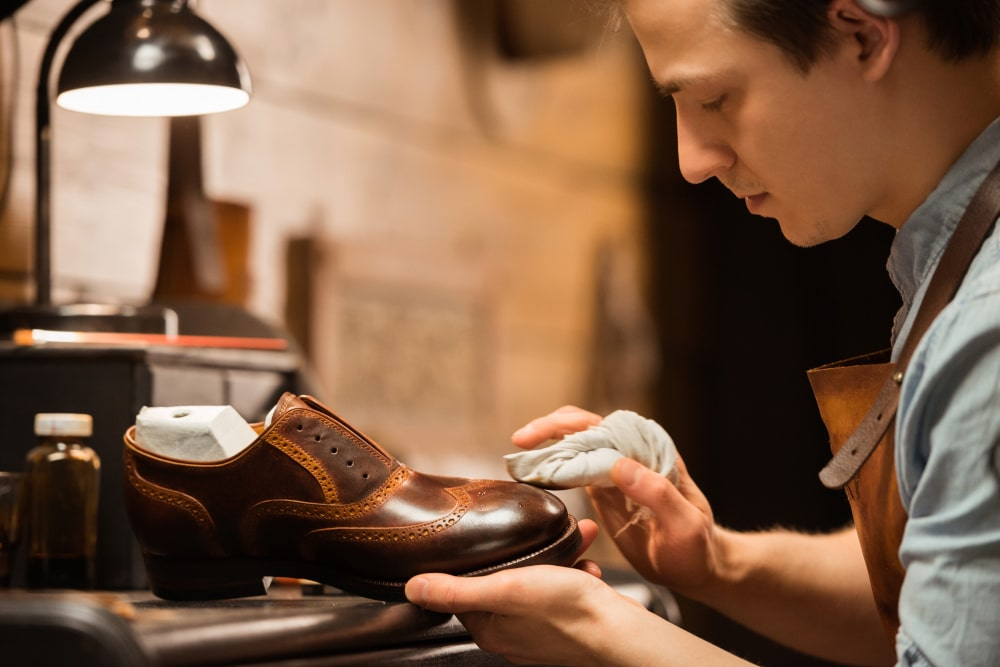
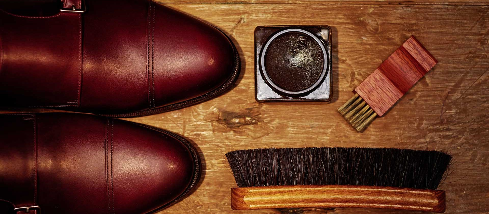

La limpieza del zapato
La pala de un zapato sólo podrá conservar su suavidad, elasticidad y brillo si recibe los cuidados adecuados. La piel del calzado mal cuidado acaba secándose, quebrándose (principalmente en los lugares donde se flexiona) y resquebrajándose tarde o temprano. Los zapatos mal cuidados tienen una vida relativamente corta.
El cuidado minucioso se convierte en una agradable rutina para el propietario del zapato, siempre y cuando disponga de un equipo adecuado. Y aunque se equipo cuente con todos los utensilios necesarios, también debe tener en cuenta el orden correcto de la limpieza.
Se necesita un cepillo de aplicación para cada color. Normalmente se confeccionan con pelo suave de caballo. Debe evitarse el uso de un solo cepillo para la aplicación de todos los colores puesto que los restos secos de color pueden mezclarse y provocar irregularidades de tonalidad, o bien pueden dar lugar a tonalidades completamente distintas. Los zapatos de piel combinada y colores distintos complicar el procedimiento de limpieza. Si por ejemplo se posee un modelo Spectator, serán precisos dos cepillos únicamente para ese modelo: un cepillo negro para la piel negra y uno blanco para la piel blanca. En caso de necesidad puede sustituirse el cepillo de aplicación por un cepillo de dientes o por una gamuza.
La cantidad de productos para la limpieza (betunes, líquidos) debería ser la misma que la de los cepillos de aplicación. Evidentemente, el calzado más exclusivo requiere artículos de limpieza de primera clase que se correspondan con exactitud al color de la pala, a menos que se desee intencionalmente que la pala del zapato adquiera un color "envejecido" rápidamente. En tal caso, el rojo burdeos, rojo burdeos oscuro; para un coñac claro, un marrón claro u oscuro, y para el marrón, betún negro. Se aplica una capa fina y regular de los productos de limpieza sobre la piel. A continuación, es preciso esperar unos 10 minutos para que penetren bien.
10 REGLAS PARA EL CUIDADO DE LOS ZAPATOS

Al traspasarle los zapatos, el zapatero inicia al cliente en los secretos del cuidado de los zapatos en forma ceremonial. Es como si entregase una obra de arte única a su comprador. La vida y el atractivo aspecto del nuevo zapato dependen de la calidad del material utilizado y de la técnica del zapatero, y también, en gran parte, del cuidado que recibe por parte de su propietario. Durante una breve prueba y tras andar unos pocos minutos, el cliente es capaz de determinar si los zapatos se adaptan bien al pie. Pero para preservar las cualidades del calzado durante largo tiempo, es recomendable seguir algunas reglas:
- Al principio, el cliente sólo puede calzarse los zapatos nuevos durante un máximo de dos a tres horas. Sólo cuando el pie se ha "acostumbrado" completamente al zapato puede empezar a llevarlos todo el día.
- No debe usar el mismo par de zapatos durante dos días seguidos, sino que debe dejarlos reposar un mínimo de 24 horas.
- Para calzárselos debe usar siempre un calzador, tanto si se trata de zapatos con cordones, de zapatos con hebilla o de mocasines.
- Antes de descalzarse debe aflojar los cordones en todos los agujeros, para que el pie pueda salir del zapato fácilmente, sin esfuerzos.
- Inmediatamente después de descalzarse, debe introducir la horma extendedora en su interior.
- Aunque el zapato se haya mojado a causa de la nieve o de la lluvia, debe introducir inmediatamente las hormas extendedoras en su interior. A continuación debe colocarlos de lado y dejar que se sequen durante un día entero.
- Es recomendable que cepille los zapatos después de cada uso, aunque en apariencia no haya disminuido su brillo anterior.
- Si durante un tiempo no usa los zapatos, debe aplicarles una fina capa de betún y conservarlos en la bolsa que recibió del zapatero, de pie y en el interior de una caja de cartón.
- El propietario de un zapato hecho a medida no debería prestar nunca sus zapatos, ya que no existen dos pies iguales.
- Todo zapato nuevo tiene su carácter especial. Su verdadera belleza se aprecia realmente cuando se lleva con traje y en la ocasión adecuada.